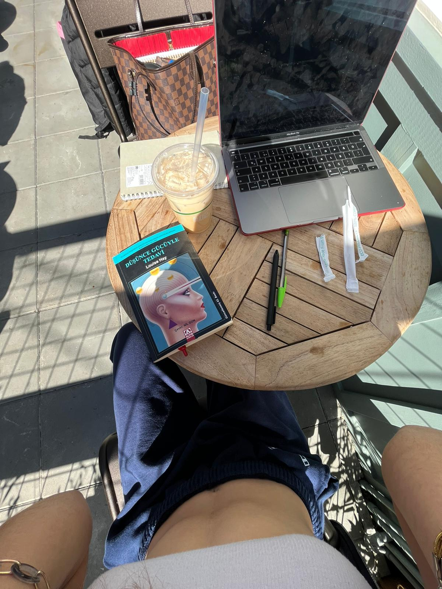

Gold Sentences I Underlined: Düşünce Gücüyle Tedavi - Louise Hay
Kitabı okurken altını çizdiğim güzel cümleler serisi :)
24 Şubat 2023

Aklımızda oluşan her düşünce geleceğimizi yaratmaktadır.
Güç merkezi, daima yaşadığımız anın içindedir.
Çünkü her an yepyeni, her an taptaze. Beni yaratan Güç ve ben birim. Ve bu güç bana kendi koşullarımı yaratma gücü verdi.
Kendi hakkımızdaki düşündüklerimiz, kendi gerçeklerimiz oluyor.
İçinde bulunduğumuz olayları yaratıyor, sonra da bunlardan duyduğumuz sıkıntı, üzüntü ve düşkırıklığı için başkasını suçluyoruz; böyle yapmakla gücümüzü de başkasına kaptırmış oluyoruz.
Hiç bir kişi, hiç bir şey, hiç bir koşul bizim üzerimizde bir güce sahip değil, çünkü aklımızla düşünce oluşturan yalnızca “biz”iz. Deneyimlerimizi, gerçekliğimizi, ve bunda yer alan tüm kişileri yaratan biziz.
Yaşam gerçekten çok basit. Ne ekersek, onu biçiyoruz.
Bilinçaltımız inanmayı seçtiğimiz her şeyi kabul eder.
Düşünebileceğimiz şeyler konusunda sınırsız seçimimiz var.
Ne kadar sık aynı deneyimi yaşadığınıza dikkat edin. Bu deneyimleri tekrar ve tekrar yarattınız, çünkü bunlar size, kendiniz hakkınızda inandığınız şeylere aynalık ediyordu. Aynı sorunla ne kadar uzun süre yaşadığımız, sorunun ne kadar önemli olduğu ya da yaşamamıza yönelik ne kadar tehlike taşıdığı hiç önemli değil.
Her şeyin malzemesi düşüncedir ve düşüncelerimizi değiştirebiliriz.
Düşüncenizi değiştirin, duygularınız da ortadan kaybolacaktır.
Dışarıda olan her şey, iç düşüncemizin aynası.
İçinizdeki bazı düşünceler, bu tür davranışları gösteren kişileri yaşamınıza çekiyor.
Affetmekte en zorlandığımız kişi, BIRAKMAYA EN ÇOK GEREKSİNİM DUYDUĞUMUZ KİŞİDİR.
Kendimizi olduğumuz gibi onayladığımız, sevdiğimiz ve kabul ettiğimiz zaman, her şey yoluna giriyor. Küçük mucizeler her yerde görülüyor.
Hayatın gerçekten basit olduğuna inanıyorum. Ne ekersek onu biçeriz. Evren, düşünmeyi ve inanmayı seçtiğimiz her şeyi destekler.
Yapılması gereken tek rejim, düşünsel rejimdir, kendimizi olumsuz düşüncelerden arındırmak.
Bir odayı dip bucak temizlemek istiyorsanız, orada olan her şeyi gözden geçireceksiniz. Bazı şeylere sevgiyle bakacak, tozunu alacak, ya da onlara yeni bir güzellik vermek için cilalayacaksınız. Bazı şeylerin tamire ihtiyacı olduğunu bilecek, bunları bir kenara ayıracaksınız. Bazı şeylere ise artık ihtiyaç kalmamıştır. Onları atma zamanı gelmiştir. Eski dergiler, gazeteler, kirli kağıt tabaklar gayet sakin bir şekilde çöp tenekesine atılabilir. Odayı temizlemek için kızgınlık gerekmiyor.
BİR DÜŞÜNCE VEYA İNANÇ SİZE HİZMET ETMİYORSA, BIRAKIN GİTSİN! BİR ŞEYE BİR ZAMANLAR İNANDINIZ DİYE, SONSUZA DEK İNANMANIZ GEREKİYOR DİYEN BİR YASA YOK.
Birisini suçladığımızda, gücümüzden vazgeçeriz.
Neye inanmayı seçiyorsam o, benim için gerçek olur. Neye inanmayı seçerseniz o sizin gerçeğiniz olur.
Sorun ne olursa olsun, kökeni bir düşünce kalıbında yatıyor ve DÜŞÜNCE KALIPLARI DEĞİŞTİRİLEBİLİR.
“Hangi düşüncelerimle bu sorunu yaratıyorum?”
Sabah uyandığınızda, yağmur yağıyorsa “Öff, ne kötü bir gün” diyenlerden misiniz? Kötü bir gün değil, Sadece ıslak bir gün. Yağmura uygun kıyafetler giyip, bakış açımızı değiştirdiğimizde, bir çok zevkli yağmurlu günler yaşayabiliriz.
“İyi” ya da “kötü” hava diye bir şey yok. Sadece bireysel tepkilerimiz var. Güzel bir hayat istiyorsak, güzel düşüncelerimiz olmalı.
GÜÇ NOKTASI DAİMA ŞİMDİKİ ANDIR. Asla çaresiz değilsiniz. Değişim, KENDİ DÜŞÜNCELERİMİZDE şimdi ve burada başlıyor!
Kendi dünyanın gücü ve merkezi sensin! Neyi düşünmeyi seçiyorsan, karşına o çıkacaktır!
Düşüncelerimizi yakalamak her zaman kolay bir şey değil. Çünkü düşünceler çok hızlı hareket ediyor. Ama bu andan itibaren ağzımızdan çıkan sözcüklere dikkat etmeye ve dinlemeye başlayabiliriz. Ağzınızdan çıkan sözün olumsuz sözcükler içerdiğini fark ettiğiniz anda durun. Cümlenin yarısında olsa bile. Ya cümleyi olumlu bitirin ya da tamamlamaktan vazgeçin. Hatta “İptal” bile diyebilirsiniz.
ACI VEREN VE SORUN YARATAN DÜŞÜNCELERDEN UZAK DURALIM.
“Bir sorun olduğunda, yapmanız gereken bir şey yok, bilmeniz gereken bir şey var.”
“Değişmeye istekliyim”. Bu olumlu cümleyi sık sık söyleyin.
Eğer toprakta yetişiyorsa ye, toprakta yetişmiyorsa yeme.
“Ben kendi dünyamın tek gücüyüm.”
Bir şeyin hemen, çabucak gerçekleşmesini istediğimizde, yarattığımız sorundan öğrenilecek dersler için kendimize zaman tanımamış oluyoruz
Direncinizin sizi değişimden alıkoymasına izin vermeyin. İkisinin üzerinde de çalışabiliriz: 1)Direncinizi gözlemek, 2) Yine de zihinsel değişimleri yapmak.
Bizim için başarılı olan bir yol bulduğumuzda, onu başkalarıyla da paylaşmak isteriz. Ama onlar hayatlarının bu döneminde değişmeye hazır olmayabilir.
Bir iplik yumağını çözmeye çalıştıysanız o yana bu yana çekmenin, asılmanın yumağı daha da karışık hale getirdiğini bilirsiniz. Çok dikkat ederek ve sabırla dügümleri çözebilirsiniz ancak. Kendi zihinsel düğümlerinizi de çözerken dikkatli ve sabırlı olmalısınız.
Kontrol ettiğiniz tek şey şu andaki düşüncelerinizdir.
Biz güç vermedikçe, düşüncelerin üzerimizde gücü olamaz. Düşünceler sadece yan yana dizilmiş sözcüklerdir. Hiç bir anlamları yoktur. Onlara ancak biz anlam yükleriz. Ne anlam vereceğimizi de biz seçeriz. Bizi geliştiren ve destekleyen düşünceleri seçelim.
Holistik felsefei tüm varlığımıza önem vermek, ve beslemek demek. Beden, Zihin ve Ruh. Üçünden birini bile imha edersek eksik kalırız, bütün olamayız.
Yaptığını, kim ve ne olduğunu sev. Kendinizle ve hayatla dalga geçin. Hiç bir şey sizi rahatsız edemez. Nasıl olsa her şey geçici.
Bedeninizin her hücresi, düşündüğünüz her düşünceye, söylediğiniz her söze karşılık verir.
Size ait olan şey sizden alınmaz, rahat olun.
Ne olduğu önemli değil, nasıl tepki gösterdiğimiz önemli.